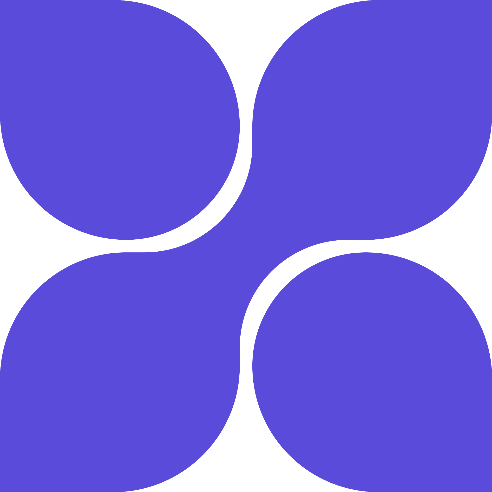

Activity & timelines
Turn foreground activity into sessions and explore how a day unfolds.

An archived open-source projectSTELLAREI was a local-first desktop application built to help you understand how your time moves across the day, without handing your personal activity to the cloud.
STELLAREI brought activity tracking, thoughtful analytics and personal planning into one desktop workspace. Its purpose was not to judge productivity, but to make patterns visible so people could make their own decisions.
Turn foreground activity into sessions and explore how a day unfolds.
Understand time distribution, context switching and recurring habits.
Organize activity with projects, categories, goals and budgets.
Use focus sessions, timers, alarms and reminders to shape your day.
Review calendars, daily time receipts and longer-term summaries.
Personalize the interface with themes and English, Persian or German.
The original application was designed to work locally, with no account, cloud backend or telemetry. Personal data was stored on the device.
STELLAREI and Weloury were merged into a larger commercial application. Their functionality is being rewritten in Rust for that successor. This repository remains available as the original open-source STELLAREI project, but it will not receive further updates.